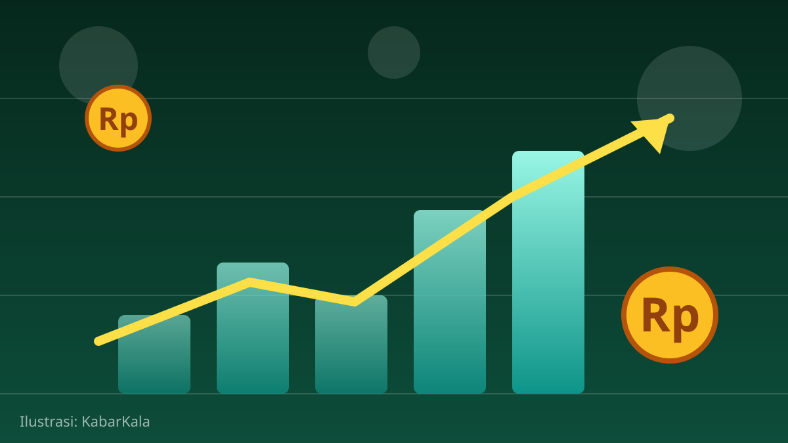

1 / 6

💰 EKONOMI
BRI x Eastspring Rilis 3 Reksa Dana, Modal Rp100 Ribu!
Dua reksa dana pendapatan tetap + satu indeks saham ESG — pas buat yang baru mau mulai investasi. Geser buat bedah satu-satu →
2 / 6
🏦
Diluncurkan 8 Oktober kemarin
BRI (PT Bank Rakyat Indonesia (Persero) Tbk) bareng PT Eastspring Investments Indonesia resmi menghadirkan tiga produk reksa dana lewat BRI Wealth Management pada 8 Oktober 2026. Tujuannya nambah pilihan diversifikasi portofolio nasabah.
Direktur Consumer Banking BRI Aris Hartanto bilang tiga produk ini kasih fleksibilitas nyusun portofolio sesuai profil risiko dan tujuan keuangan masing-masing nasabah.
3 / 6
📋
Tiga produknya apa aja?
Produknya: Eastspring IDR Fixed Income Fund Kelas A, Eastspring Investments IDR High Grade Kelas A — keduanya reksa dana pendapatan tetap — plus Eastspring IDX ESG Leader Plus Kelas A, reksa dana indeks saham berbasis prinsip ESG (lingkungan, sosial, tata kelola).
Investasi awal minimum cuma Rp100 ribu, dengan kelipatan Rp100 ribu. Terjangkau banget buat kantong anak muda.
4 / 6
📊
Rekam jejaknya lumayan solid
Dua di antaranya sebenarnya bukan barang baru: IDR Fixed Income Fund sudah jalan sejak 16 Maret 2015 dengan dana kelolaan Rp5,53 triliun dan kinerja kumulatif 86,02% sejak peluncuran (data Agustus 2026). IDR High Grade jalan sejak 9 Januari 2013.
Fokus investasinya di obligasi pemerintah dan korporasi Indonesia plus instrumen pasar uang dalam negeri — profil risiko menengah.
5 / 6
🌱
Ada opsi ESG buat yang peduli bumi
Reksa dana IDX ESG Leader Plus cocok buat lo yang pengin duitnya kerja di perusahaan dengan praktik lingkungan dan tata kelola yang baik. Presiden Direktur Eastspring Indonesia Sulystari Rizal bilang kerja sama ini buat memperluas akses masyarakat ke investasi yang dikelola profesional.
Bonus konteks: dana kelolaan reksa dana BRI naik 46,94% YoY di kuartal II-2026, dan investor baru di BRI Wealth Management melonjak 280% YoY. Artinya makin banyak anak muda yang mulai melek investasi.
6 / 6
🤔
Efeknya ke lo apa?
Investasi sekarang bisa mulai dari Rp100 ribu — seharga dua kali nongkrong di kafe. Buat yang gajinya habis buat jajan, ini pintu masuk paling ramah buat bikin dana darurat kerja lebih keras daripada sekadar numpuk di tabungan.
Tapi inget aturan mainnya: reksa dana tetap punya risiko, kinerja masa lalu bukan jaminan masa depan. Baca prospektusnya dulu, sesuaikan sama profil risiko lo, baru gas.